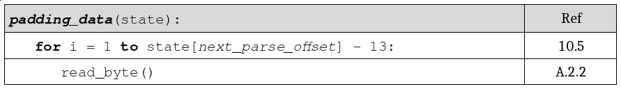

Pseudocode to SMPTE Word Document translation¶
The vc2_pseudocode_parser.docx_transformer module and
vc2-pseudocode-to-docx command line tool automatically translate pseudocode
listings into syntax-highlighted SMPTE-style listings tables in a Word
document.
As an example the following input:
padding_data(state): # Ref
# Read a padding data block
for i = 1 to state[next_parse_offset]-13: # 10.5
# NB: data is just discarded
read_byte() # A.2.2
Is transformed into the following output:
Note that:
- Syntax highlighting has been applied
Keywords are in bold (e.g.
forandto)Labels are italicised (e.g.
next_parse_offset)Variables and other values are in normal print
Spacing is normalised (e.g. around the
-operator)End-of-line comments are shown in a right-hand column
Comments appearing on their own are omitted
Dependencies¶
To generate word documents the python-docx library is used. This is an
optional dependency of the vc2_pseudocode_parser software and must be
installed separately, e.g. using:
$ pip install python-docx
Command-line utility¶
The vc2-pseudocode-to-docx command line utility is provided which can
convert a pseudocode listing into a Word document.
Example usage:
$ vc2-pseudocode-to-docx input.pc output.docx
Python API¶
The pseudocode_to_docx() utility function may be used to directly
translate pseudocode into a Word document.
-
pseudocode_to_docx(pseudocode_source, filename)¶ Transform a pseudocode listing into a Word (docx) document.
Will throw a
ParseErrorASTConstructionErrorif the supplied pseudocode contains errors.
Example usage:
>>> from vc2_pseudocode_parser.docx_transformer import pseudocode_to_docx
>>> pseudocode_source = '''
... foo(state, a):
... state[bar] = a + 1
... '''
>>> pseudocode_to_docx(pseudocode_source, "/path/to/output.docx")